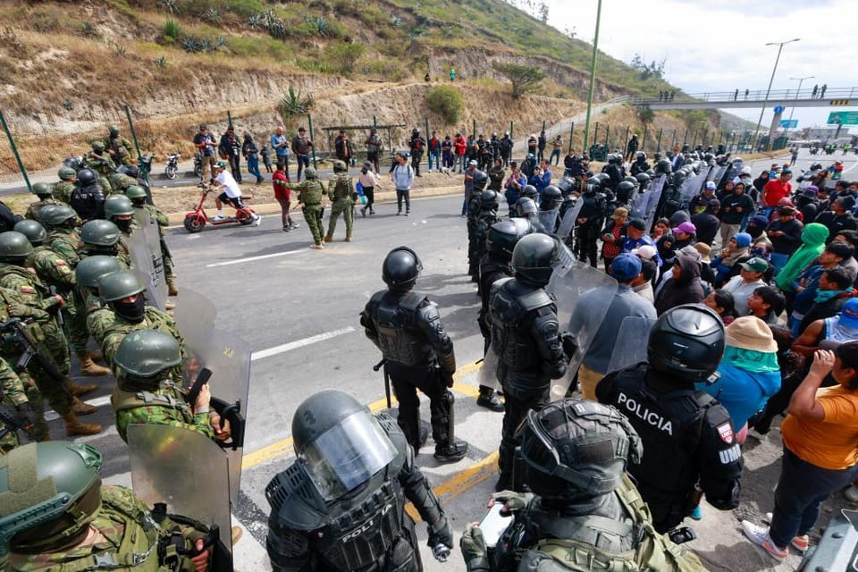

世界苦茶10月08日新闻 | 34条 | 赖清德呼吁特朗普护台海和平

赖清德呼吁特朗普护台海和平 | 欧盟针对中国提高钢铁业关税 | 中国多地极端天气致一人遇难 | 中国第四次全会将迎来最大换届 | 世界银行上调中国GDP增速至4.8%
苦茶数据
美元兑人民币：7.15（昨日7.14，前日7.13）
美元兑日元：152.60（昨日150.68，前日149.79）
上证指数：休市（昨日3882，前日3862）
标普500指数：6714（昨日6740，前日6715）
比特币：122013（昨日123943，前日123979）
布伦特原油：65.91（昨日65.74，前日65.44）
中国新闻
• 中国多地现极端天气 青海251名徒步者获救一人遇难。
中国国庆黄金周期间多地出现极端天气，青海省祁连山冷龙岭251名受困徒步者获救，一人遇难。综合央视新闻和路透社报道，跨越青海、甘肃两省的祁连山冷龙岭区，上星期日发生数百名徒步人员受困事件。搜救工作星期二中午约12时完成，共251名滞留人员全部转移，186人为男性，65人为女性。一名被困人员因失温及高原反应遇难，其余获救人员身体状况良好。当地公安部门在关键区域设置劝返点、增设临时检查站，确保不再有人员进入徒步区域。青海省门源回族自治县政府星期天曾发通告说，近期发现有徒步爱好者私自进入冷龙岭区域，该区域平均海拔超过4000米，且天气多变、地形复杂，加上连续降雪，危险性极大。
• 中国政治流亡者被捕 泰国或不再是“避风港”。
中国一名政治流亡人士在泰国参与“六四”纪念活动后，被当地警方以签证违规为由逮捕，并面临遣返风险。流亡者指这是因为受到北京施压。根据法新社报道，53岁的周俊义来自流亡组织“中国民主党”。该组织今年6月在曼谷西部北碧府举办纪念“六四”事件的活动。活动结束八天后，泰国警方以签证违规为由，前往周俊义住所将其逮捕。周俊义10年前在海外参与民运活动后逃离中国。他在泰国拘留所对自己可能被遣返的境况表示“很焦虑，也失去了希望”。他担心遣返中国后将立即被逮捕并遭受酷刑，甚至面临长期监禁。另一名为西藏和维吾尔人权发声的活动人士谭义祥 已被泰国移民部门拘押超过一年，尽管他已被联合国认定为难民。
• 中国第四次全会预计将迎来八年来中央委员会换届规模最大的一次。
预计本月在中共最高机构进行改组，多名高级官员因腐败调查被边缘化 由于更多委员受到持续的腐败调查或因病故去世，预计此次人事变动将创下自2017年以来的最高换届幅度。中央委员会在每个五年任期内通常举行七次全会，第四次全会是其中之一。预计本次全会将于10月20日至23日在北京召开，重点将放在勾勒下一个五年规划。现任委员会于2022年在中共二十大上产生，拥有205名正式委员和171名候补委员。
印太新闻
• 双十前夕受访 赖清德喊话特朗普护台海和平。
台湾总统赖清德在双十节前夕接受美国媒体专访，除重申“中华民国和中华人民共和国互不隶属，台湾也不是中国的一部分”等两岸定位论述外，更喊话美国总统特朗普，若能让中国大陆国家主席习近平永远放弃对台发动武力攻击，必然是诺贝尔和平奖得主。10月10日台湾双十节将至，这也将是赖清德上任后第二次发表双十谈话。在此前夕，台湾总统府官网星期二发布赖清德接受美国广播节目“The Clay Travis and Buck Sexton Show”主持人、美国保守派意见领袖塞克斯顿的专访问答内容。这段专访也在台北时间星期二凌晨播出。
• 国民党主席选举黑函多剑指郑丽文 郝龙斌罗智强奋起直追。
台湾前立委郑丽文上周在国民党主席候选人民调中领先，对她不利的黑函与攻击随后纷至沓来。急起直追的国民党主席候选人、台北前市长郝龙斌也怒指，攻击他和现任国民党主席朱立伦密室协商等谣言与假民调，都是破坏党内团结的敌人。郝龙斌在国民党星期二首场政见会中展现魄力，宣示若当选党主席，至少要在2026年地方选举拿下台南或高雄其中一都，否则马上辞职。另一位候选人、国民党立委罗智强当场也立下军令状说，如果2026不能拿下更多议员席次，没有打下高雄或台南，他立刻辞掉党主席。在野的国民党将在10月18日改选党主席，除郝龙斌，郑丽文，罗智强外，还有孙文学校总校长张亚中。
• 高市早苗以撒切尔为榜样，要求努力工作引起激烈争议。
据日经亚洲报道，在当选日本执政党领袖时，高市早苗表示，她必须忘掉“工作与生活平衡”这一概念。“我要工作，工作，再工作。”她在周六当选为自民党首位女性党魁时宣布，如果没有意外，她将在本月晚些时候成为日本首相。高市在自民党投票结束后立即发表讲话时，称每位国会议员都必须“像拉车的马一样努力工作”。经过2024年10月和2025年7月连续两次国会选举惨败后，自民党国会议员人数比一年前大幅减少。作为新任自民党总裁，她的职责之一是在本周二公布新一届党高层人事名单。她自然将支持自己参选的议员安排进了高层岗位。这些任务只会在未来几天越来越多。而她还要照顾今年因中风正在康复的73岁丈夫。
• 自民党新体制亮相，公明党提三点担忧。
10月7日上午，日本自民党在党总部召开临时总务会，正式决定新的领导班子人事安排。自民党总裁高市早苗任命铃木俊一为干事长，麻生太郎出任副总裁。此外，小林鹰之出任政调会长，有村治子担任总务会长。高市早苗在总务会上表示：「希望能把对未来的担忧，转化为希望与梦想」。这是新领导班子首次召开高层会议，随后党内四位主要干部共同出席了记者会。干事长铃木俊一表示：「党内团结至关重要。我们要应对各种难题和局势变化，以此回应国民的信任」。他谈到自民党与公明党的联合执政协商。
科技新闻
• 荷兰芯片业明星高管抨击欧盟对人工智能监管过度。
荷兰芯片制造巨头ASML的一位高管表示，欧盟关于人工智能的规则正把科技人才和公司推向硅谷。ASML首席财务官罗杰·达森周一晚在埃因霍温的一次活动上说：“为什么在欧洲很难把人工智能做好？简单，因为我们一开始就选择监管，要把人工智能控制住。”达森说，“一个有人工智能天赋的人，用他辛苦挣来的钱做的第一件事就是买张飞往硅谷的机票。
• 中国提议发起全球倡议，建设面向所有人的人工智能卫星超级网络。
中国提出全球计划建设由人工智能驱动的卫星巨型网络 为所有人提供实时服务并防止太空拥堵，研究人员称 他们的研究发表在最新一期《国家科学评论》上。该项目由长期从事中国卫星导航系统研究的航天仪器学教授杨军领导。他表示，所提议的“开放共享可持续巨型星座”可以“一举两得”。这不仅能缓解日益拥挤的近地轨道带来的可持续性挑战，还能促进公平获取太空资源。“它为在空间系统中构建人类命运共同体提供了有价值的中国方案。”团队成员、博士生马晓天表示，全球已申报发射的卫星超过一百万颗，领导者是如SpaceX的星链计划，其目标可能高达4.2万颗。
• 诺贝尔物理学奖表彰了三位通过其研究推动量子技术发展的科学家。
诺贝尔物理学奖授予三位推动量子技术发展的科学家 斯德哥尔摩——约翰·克拉克、米歇尔·H·德沃雷特和约翰·M·马丁尼斯周二因他们对推动数字技术的神秘量子隧穿效应的研究而共同获得诺贝尔物理学奖。克拉克在加州大学伯克利分校开展研究；马丁尼斯在加州大学圣塔芭芭拉分校；德沃雷特则在耶鲁大学以及加州大学圣塔芭芭拉分校从事研究。“说得委婉些，这是我一生中最大的惊喜，”克拉克在被告知获奖后通过电话向记者表示。他向另外两位获奖者致敬，称“他们的贡献实在是压倒性的”。
• 诺贝尔委员会无法联系到医学奖获奖者。
Fred Ramsdell 与其他两位获奖者获得了周一颁发的诺贝尔生理学或医学奖，以表彰他们发现免疫系统的调节性 T 细胞。但由于这位获奖者目前正处于“数字戒断”状态，诺贝尔委员会至今仍无法联系到他并告知这一消息。据其旧金山实验室索诺玛生物治疗公司的一位发言人称，获奖者正在一次“远离尘嚣”的徒步旅行中“享受着自己最好的生活”。拉姆斯德尔的朋友、实验室联合创始人Jeffrey Bluestone表示，这位研究人员值得称赞，但他也无法联系到他。诺贝尔委员会秘书长托马斯·珀尔曼在宣布获奖者的新闻发布会上表示：“我请求他们，如果有机会，请给我回电话。”
经济新闻
• 官媒连续六天评论为中国经济信心喊话。
中共中央机关报《人民日报》连续六天发表评论，为中国经济形势信心喊话，并回应中国经济唱衰论，强调不能因部分经营主体感受不好就否定整体经济形势。受访学者指出，当前中国内外对中国经济前景看法不一，《人民日报》评论相信旨在统一思想，引导各界认清中国经济特殊性，烘托即将召开的中共二十届四中全会。《人民日报》从上星期二起，连续六天在“习近平经济思想指引下的中国经济专论”栏目下，刊登署名“钟才文”的评论。有网民推测，“钟才文”是“中央财经委员会文章”的谐音缩写。首两篇评论——“从全球视角看新时代中国经济的跨越与蝶变”和“深刻认识中国经济长期稳定发展的内在逻辑”——从国际形势出发，强调在地缘政治冲突加剧。
• 中伊、中俄以物易物 规避美西方制裁。
中国和伊朗、俄罗斯扩大以物易物贸易规模，以规避欧美制裁。学者分析，随着西方制裁加码，中国扩大具备易货资质的企业名单，使更多中企得以与被制裁国延续贸易往来。彭博社引述消息人士报道，中国汽车制造商奇瑞汽车将半成品车辆出口到伊朗，用于交换伊朗出产的铜和锌。知情人士称，奇瑞先向安徽一家公司出售引擎和底盘，这家公司再将组装的半成品出口至伊朗，在当地组装成整车销售。伊朗则以等值金属运回中国，由安徽铜陵有色公司分销。奇瑞与铜陵有色均属安徽省重点国企。报道称，通过以物易物方式出口的汽车最多达9万辆。知情人士说，中伊“汽车换金属”交易始于六年多前，在美国重新加码制裁伊朗之时。
• 赖清德：台湾愿助美成为AI世界中心。
美台第五轮实体关税磋商上月底落幕，双方仍未达成最终共识，台湾总统赖清德接受美国广播节目专访时提出，台湾很乐意跟美国一起努力，共同协助美国再工业化并成为人工智慧的世界中心，让美国持续领导世界，也让美国能再度伟大。台湾总统府官网星期二发布赖清德接受美国广播节目“The Clay Travis and Buck Sexton Show”主持人、美国保守派意见领袖塞克斯顿的专访问答内容。其中在谈及台美在先进科技、晶片制造和人工智慧等领域的经济伙伴关系时，赖清德首先强调，台积电或台湾半导体产业只是整个生态系的一部分，并不是全部。他接着说，美国在整个半导体生态系里面获得80%的利益。
• 美国议员推动扩大对华芯片出口限制。
美国议员推动对华扩大芯片出口限制 两党小组敦促扩大芯片设备管制并加强与盟友协调，因担忧特朗普放宽技术限制 一份周二发布的报告显示，一群两党美国议员正在推动“显着”扩大对华芯片制造设备的出口管制，并要求美国盟友在限制措施上保持一致。“如果我们真心想限制中国半导体的进步，全面的国家级技术管控是唯一途径，”众议院中国共产党特别委员会委员，众议员约翰·穆伦纳尔在乔治城大学的安全与新兴技术中心举办的周二活动上表示。“我们的管控必须得到盟友的同等执行。如果ASML或东京电子继续销售，我们的管控就像筛子一样漏洞百出。我们必须说服，必要时也要施压荷兰和日本的合作伙伴，执行同步的限制措施。
• 特斯拉推出更便宜版本的最畅销电动车，力图在艰难的一年中夺回市场份额。
特斯拉周二推出两款更便宜的电动车型，试图在艰难的一年中夺回市场份额，但投资者仍抛售其股票。新的 Model Y 起价略低于 4 万美元，内饰被简化。这对特斯拉而言是个严峻年份：其试图在产品线老化、外国电动汽车制造商竞争激烈以及针对埃隆·马斯克的抵制行动影响下吸引更多客户。消息公布后股市的反应表明市场并不认为这些新车型能带来太大帮助。
• 欧盟针对中国推出一揽子措施，以保护陷入困境的钢铁业。
瞄准中国，欧盟公布大范围措施保护其陷入困境的钢铁产业 欧盟委员会公布了大范围措施，旨在保护欧盟陷入困境的钢铁产业，防止其被来自中国的产能过剩冲击。该措施将把免关税配额削减近一半，并把超额进口的关税提高一倍至50%。该计划须经由欧洲议会和由27个成员国组成的欧洲理事会批准方可生效，并将取代一项将于2026年6月到期的现行保障机制。提案未点名中国，关税和配额将适用于全球进口。委员会表示，各国将有机会在世界贸易组织谈判中争取降低税率，此举使该方案符合日内瓦机构的规则。尽管如此，参与该进程的官员表示，中国无疑是“最大的问题”，其钢铁产能过剩问题不仅未见好转。
• 加拿大总理卡尼应对“特朗普式美国”的愿景：国内推进自由化。
本文刊发在经济学人网站。10月7日，马克·卡尼将会见特朗普。这将是他在担任加拿大总理六个月内第二次访问白宫，希望达成协议，结束或至少缓和特朗普一连串的关税攻势。事关重大。针对加拿大钢铁、汽车和铝出口的关税，已经开始对加拿大经济造成损害。与其他西方国家相比，卡尼政府的支持率仍然较高，但已有下滑迹象。大多数加拿大人认为，生活成本上升是政府面临的最重要问题。贸易协议是缓解这一问题的最快方式。9月29日，卡尼在渥太华接受《经济学人》采访时表示，这样的协议将惠及加拿大和美国，尤其是汽车制造、钢铁、铝以及建筑用木材等两国高度一体化的行业。
• 世界银行上调中国今年GDP增速至4.8%。
世界银行上调中国今年GDP增速至4.8% 2025年10月7日世界银行将中国2025年经济增长预测上调至4.8%，但同时警告，明年的增长势头将放缓，理由是消费者和企业信心低迷。广告 世界银行周二发布了东亚和太平洋地区半年一度的经济展望报告，将中国今年的经济增长预期调至4.8%，而今年4月份发布的报告曾预测今、明两年的GDP增长均为4.0%。世行同时微调了中国明年的经济增长率预期为4.2%。报告作者写道，中国经济增速下降的原因是，出口增长放缓，公共债务上升导致财政刺激措施减少，以及持续的结构性减速。今年7月，世界货币基金组织也重新预测中国今年将实现4.8%的增长。
• 德国内阁就致信欧盟要求禁售燃油车一事出现分歧。
德国执政联盟中的左翼成员被其联盟伙伴与意大利向欧盟委员会发出的一封信震惊，该信呼吁立即修改将自2035年起禁止销售排放二氧化碳汽车的相关立法。意大利工业部长阿多尔福·乌尔索在周一的新闻稿中表示，“两国一致要求委员会立即在汽车领域改变方向”，该信由乌尔索与德国经济部长卡特里娜·赖歇共同签署。信件本身以及赖歇的参与令社会民主党感到震惊，社会民主党与佛里德里希·梅尔茨领导的保守派基督教民主党组成执政联盟。直到POLITICO联系寻求置评时，社民党才得知该信的存在。
• 美国贸易协定AGOA的终结推动非洲进一步靠近中国。
一项已死的美非贸易协定如何把非洲进一步推向中国的轨道 非洲增长与机会法案在国会未能通过续期法案后，于9月30日到期，导致包括服装和纺织品在内的6000多种非洲出口商品遭遇更高的美国关税。这一变化带来的经济不确定性预计将冲击肯尼亚、南非、莱索托和马达加斯加等国——这些国家的纺织和服装产业高度依赖美国市场。在AGOA框架下，肯尼亚能够为利维斯和朗威格等美国大牌生产服装，使这一东非国家能够更有竞争力地与孟加拉国、越南等亚洲出口国竞争。对于南部非洲的小国莱索托来说，45%的出口销往美国，其中80%的出口为成衣。
• 「高市交易」势头不减，日经股指连续3天创新高。
10月7日，东京股市的日经平均股指连续第四个交易日上涨，收于4万7950.88点，比前一交易日上涨6.12点。这是连续三天刷新历史最高收盘价。股市延续了前一日美国股市科技股上涨的势头。自民党总裁高市早苗就任带动的股价上涨仍在持续，盘中一度涨幅超过580点，但投资者对市场过热的担忧也带来了持续的卖压，日经股指涨势逐渐放缓，甚至出现小幅回落的情况。岩井Cosmo证券首席策略师嶋田和昭对目前的股市上涨评价道：「即便觉得上涨速度过快，也不得不跟随市场买入，否则就会错失机会」。这反映出投资者就算不想买也不得不买的心理。
• 在参议院再次未能通过拨款措施后，美国政府停摆将继续。
在参议院再次未能通过拨款措施后，美国政府停摆将继续 美国参议院周一第五次未能通过重启政府的拨款措施。民主党和共和党提出的对立方案均被否决，未能达到所需的60票门槛。唐纳德·特朗普在当天早些时候重申，如果再次投票失败将进行大规模裁员的威胁。五天前，各机构的资金耗尽，数千名联邦雇员被休无薪假或被要求带薪待命但不得报酬。但美国总统暗示，他愿意尝试结束僵局，可能与坚持要求在法案中涉及医疗保健问题的民主党达成协议。共和党人则在推动一项“不掺杂其他条款的”拨款法案。周一首先未过的是民主党主导的延长政府拨款法案，投票结果为45票对50票失败。随后其共和党对应法案也以52票对42票落空。投票不久后。
• 温州即将暂停实施汽车置换更新补贴政策。
据 “温州发布” 微信公众号消息，2025年温州市汽车置换更新和报废更新政策将调整：自2025年10月10日24时起，全市范围内暂停实施汽车置换更新补贴政策。在政策暂停前已购车的消费者，须同时满足以下条件方可申领补贴：新车购车发票开具时间在2025年10月10日24时之前；旧车转让或报废时间、新车注册登记时间须在2025年10月15日24时前完成。同时，符合补贴条件的消费者，需要在2025年10月31日24时前，通过 “浙江省汽车置换更新” 官方小程序完整提交申请并上传所需申报资料；补正信息须于2025年11月10日24时前通过原渠道完成补正。逾期未提交或补正的，将视为自动放弃补贴申领资格。
俄乌战争
• 图斯克称，在对北溪爆炸案的调查中移交一名乌克兰人“不符合波兰利益”。
乌克兰战争最新：图斯克称“这不符合波兰利益”，不会移交涉嫌者以协助北溪事件调查 10月7日要闻： - 图斯克称“这不符合波兰利益”，不会在北溪2调查中移交乌克兰人 - 菲科就任后，斯洛伐克首次向乌克兰发送非致命防务援助包 - 一名军事情报消息人士称，游击队破坏了俄罗斯一列装载军用货物的火车 - 泽连斯基称，乌克兰拨出3600万美元以加强前线地区电网，应对俄方袭击 - 一名加入乌克兰军队的俄罗斯人因涉嫌间谍活动被拘留 10月7日，波兰总理唐纳德·图斯克表示，应为修建北溪2的人感到羞愧并保持沉默，而不是那些被指控破坏该管道的人；他补充称，将该名嫌疑人移交并“不符合波兰的利益”。
• “后勤恐怖主义”——俄罗斯加大对乌克兰铁路的袭击。
“后勤恐怖主义”——俄罗斯加大对乌克兰铁路的袭击 2025年10月4日，在乌克兰苏梅州肖斯特卡，一节被俄罗斯无人机击中的“肖斯特卡—基辅”客运车厢。俄罗斯加大了对该国关键铁路基础设施的打击，针对乌克兰铁路，似乎旨在在新的军援公告之际扰乱军事后勤。根据国家铁路运营商的报告，俄罗斯9月对乌克兰铁路基础设施的袭击次数是8月的两倍——这是一个关键事态发展，自全面入侵以来，随着民用航空被迫中止，乌克兰不得不依赖铁路作为主要交通方式。袭击主要由无人机实施，目标包括靠近俄罗斯边境和前线活跃区域的州，如顿涅茨克，苏梅，波尔塔瓦，切尔尼戈夫和基洛沃格勒。
• 默克尔称波兰与波罗的海国家对俄入侵乌克兰负有部分责任。
默克尔称波兰与波罗的海国家对俄入侵乌克兰负有部分责任 2025年10月7日德国前总理默克尔在接受匈牙利媒体采访时表示，部分欧盟国家曾反对与普京直接对话，间接影响了俄乌局势发展。她的言论引发波兰及波罗的海国家的公开回应。德国前总理默克尔在接受匈牙利媒体《游击报》访问时称，波兰和波罗的海国家对俄罗斯入侵乌克兰负有部分责任。默克尔在访问匈牙利的时候接受了这家媒体的采访。她在采访中表示：“2021年6月，我感觉普京不再认真对待《明斯克协议》，因此我希望建立一种新的形式，让我们能够以欧盟的名义直接与普京对话。” 《明斯克协议》签署的目的原本是为了结束乌克兰和俄罗斯之间的顿巴斯战争。默克尔在采访中说。
• 备受争议的泽连斯基办公室前顾问遭俄罗斯发出国际逮捕令。
俄罗斯对泽连斯基办公室前顾问发出国际逮捕令 俄罗斯国家通讯社塔斯社于10月7日报道，俄罗斯对奥列克谢·阿雷斯托维奇发出国际逮捕令。阿雷斯托维奇曾以自由顾问身份在乌克兰总统弗拉基米尔·泽连斯基办公室工作。俄罗斯当局指控其从事恐怖主义活动并散布“关于俄罗斯军队的假新闻”。2024年2月，俄罗斯一法院在同一案件中已对其缺席下发出拘捕令。俄罗斯金融监管机构罗斯菲蒙托林宁早前已将其列入“恐怖分子和极端分子名单”。阿雷斯托维奇在接受俄罗斯宣传人士克谢妮娅·索布恰克采访后一天被莫斯科列为通缉对象。在该次采访中，他发表了一系列在乌克兰引发广泛谴责的争议性言论。阿雷斯托维奇于2023年1月辞职。
• 据报道，鉴于间谍活动激增，欧盟将限制俄罗斯外交官出行。
金融时报10月7日援引未具名欧盟消息称，欧盟政府已同意限制俄罗斯外交官的流动，以应对与莫斯科有关的间谍和破坏活动。此举是在针对乌克兰盟友的混合行动激增之后采取的，这些行动包括纵火，网络攻击，基础设施破坏和无人机入侵。欧洲情报机构指责莫斯科支持的行动者策划这些挑衅，许多人据称以外交掩护工作。根据拟议规则，驻在欧盟首都的俄罗斯外交官在跨越国界前将被要求通知其他成员国。这项由捷克主导的倡议旨在限制那些被怀疑在其驻在国以外活动的间谍的流动性。自2023年5月以来，布拉格一直在推动此类措施。
• 匈牙利的欧尔班指责泽连斯基就乌克兰申请加入欧盟进行“道德绑架”。
匈牙利总理维克多·欧尔班10月6日表示，乌克兰总统弗拉基米尔·泽连斯基为了推动乌克兰的欧盟入盟申请，正对匈牙利采用“道德勒索的策略”。欧尔班对乌克兰日益尖锐的言辞与他在2026年匈牙利议会选举前的反欧盟和民族主义言论一致。欧尔班写道：“他再次用他惯用的道德勒索手段，迫使各国支持他的战争努力。匈牙利在道德上没有义务支持乌克兰加入欧盟。” “从来没有哪个国家能通过勒索进入欧盟——这次也不会发生。欧盟条约没有模糊地带：成员资格由成员国一致决定。” 欧尔班援引一项民调称，大多数匈牙利人据称反对乌克兰加入欧盟。该民调的可信度和透明度受到质疑。
世界新闻
• 以色列人纪念10月7日周年，关于加沙和平计划的谈判仍在继续。
以色列各地民众纪念10月7日周年，关于加沙和平计划的谈判继续进行 以色列各地的人们聚集纪念自哈马斯发动的2023年10月7日袭击两周年，与此同时在埃及就结束加沙战争的谈判仍在进行。该次袭击造成超过1200人死亡，另有251人被带回加沙成为人质。这是自大屠杀以来犹太人遭受的最致命的一天。以色列随后在加沙发起军事攻势，据该地由哈马斯运营的卫生部称，已造成超过6.7万人死亡。联合国及其他国际机构视其数据为可靠。
• 教皇利奥十四世将于下月前往土耳其和黎巴嫩，开展他的首次出国访问。
教皇列奥十四世周二表示，他下月对土耳其和黎巴嫩的首次出访将提供一个推动基督徒合一的历史性机会，并向长期受苦的黎巴嫩人民及更广泛的中东传达和平与希望的信息。列奥在离开位于罗马以南的教皇行宫卡斯特尔·甘多尔福时与记者会面，概述了此次出访。梵蒂冈周二在10月7日哈马斯对以色列南部发动袭击周年之际宣布了这次行程。列奥将于11月27日至30日先访土耳其，随后于11月30日至12月2日访黎巴嫩。对土耳其的行程将包括前往伊兹尼克的朝圣，以纪念公元325年基督教第一次大公会议——尼西亚公会议1700周年。这一周年在天主教与东正教关系中具有重要意义，因为325年的尼西亚会议早于将基督教东西方分裂的宗教分歧。
• 最高法院就各州是否可以禁止对LGBTQ+未成年人的转化治疗听取辩论。
最高法院对各州禁止对 LGBTQ+ 未成年人实施“转换疗法”表示怀疑 华盛顿 — 周二，多数最高法院大法官似乎倾向支持一位基督教顾问的诉求，她认为各州禁止对 LGBTQ+ 未成年人的“转换疗法”侵犯了她的第一修正案权利。在唐纳德·特朗普政府的支持下，卡莉·蔡尔斯主张，大约一半美国州通过的这些法律错误地禁止她为未成年人提供自愿的、基于信仰的疗法。她正在科罗拉多州对该法律提起诉讼。该州表示，其措施仅仅是对持牌治疗师的监管，禁止一种已被科学否定并与严重伤害相关联的做法。但法院的保守派多数似乎并不认同各州可以在允许肯定青少年认同为同性或跨性别的咨询的同时。
• 特朗普有关阿富汗空军基地的策略把印度、巴基斯坦和中国团结到反对阵营。
特朗普欲夺回阿富汗巴格拉姆空军基地的赌注将印度，巴基斯坦与中国团结在反对阵营 在莫斯科会谈上，地区对手与俄罗斯和伊朗一道，拒绝美国总统收回巴格拉姆空军基地的企图 在周二于莫斯科举行的第七届“莫斯科模式”阿富汗磋商中，这三个在边界和地区影响力上常有分歧的亚洲大国——与包括伊朗和俄罗斯在内的国家一道——共同拒绝了华盛顿收回该基地的推动。“与会国家称，某些国家试图在阿富汗及邻国部署其军事基础设施是不可接受的，因为这不符合地区和平与稳定的利益，”俄罗斯外交部发布的联合声明写道。来自阿富汗，伊朗，哈萨克斯坦，吉尔吉斯斯坦，塔吉克斯坦和乌兹别克斯坦的代表也出席了会议。